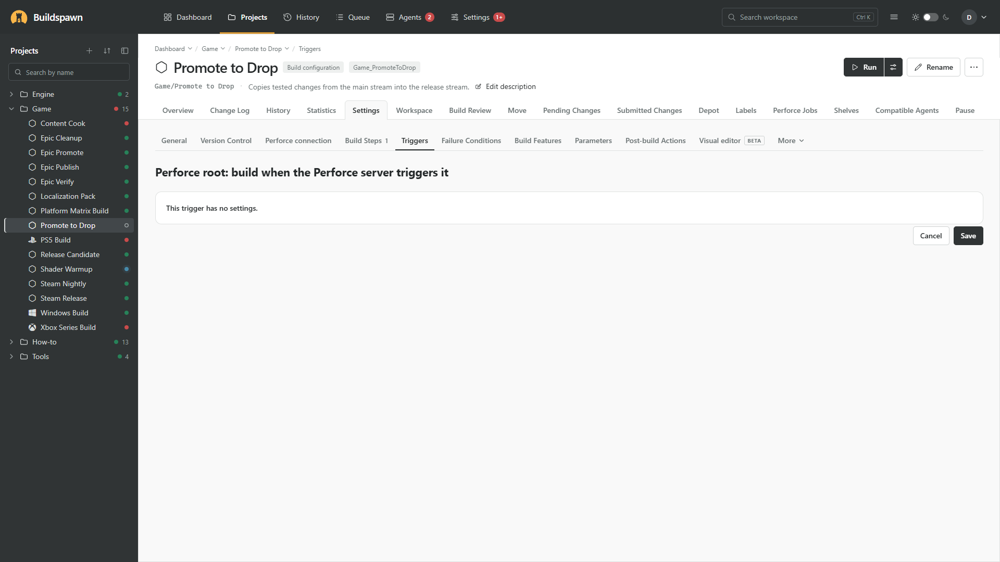

Perforce root trigger
Starts a build when the Perforce server calls Buildspawn, for a build configuration that uses a shared Perforce root.
When to use it
Use it instead of the P4 trigger when the build configuration is on a Perforce root (a shared connection to a depot). The picker offers it only for those build configurations.
How to set it up
- Open the build configuration and go to Settings › Triggers.
- Click Add new trigger and click Add next to Perforce root: build when the Perforce server triggers it.
- The trigger has no settings. Click Save.
- Set up the same
change-commitline on the Perforce server as for the P4 trigger.

Every field
There are no fields. The trigger works like the P4 trigger, with these differences:
- It checks the build configuration's root, with the rights of the system, and starts a build when it finds changes.
- While the trigger is active, the root polls at most once in a set time, even if something else asks. The log says Polling skipped: a Perforce trigger is active on root ….
- The Perforce pages show the new change soon after.
A worked example
Skyforge's build configurations share the root skyforge-main. Add this trigger to the Windows Build. A submit starts one build.
What you see when it runs
The root's page says Perforce trigger active: last call … ago. The log of the trigger says P4: Changes found or P4: No changes.
Problems and fixes
| Problem | What to do |
|---|---|
| The trigger is not in the list | The build configuration is not on a Perforce root. |
| No build after a submit | The Perforce server's trigger line is missing, or the call is refused. See the P4 trigger page. |